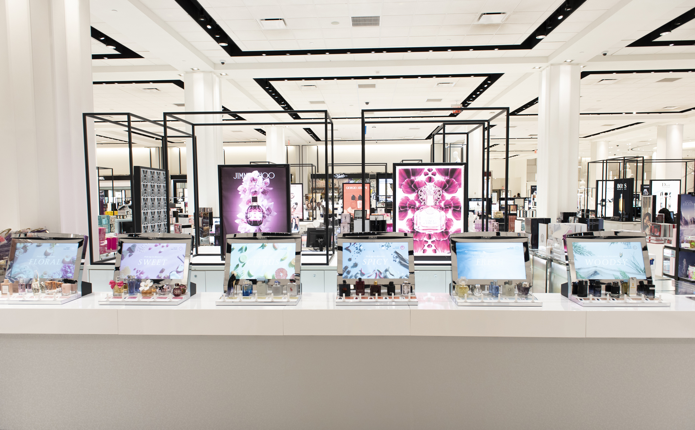
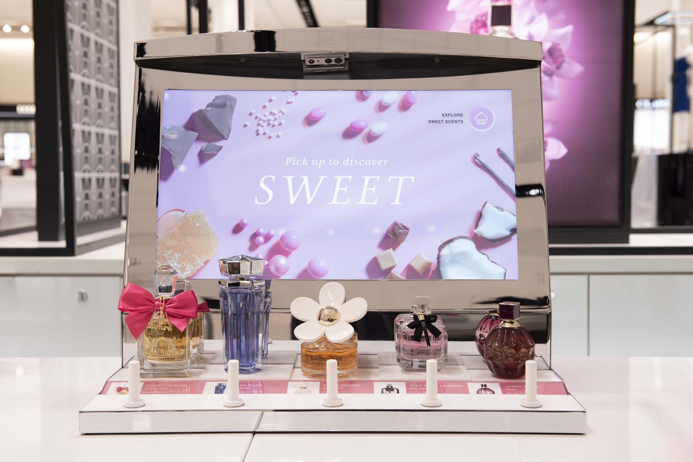
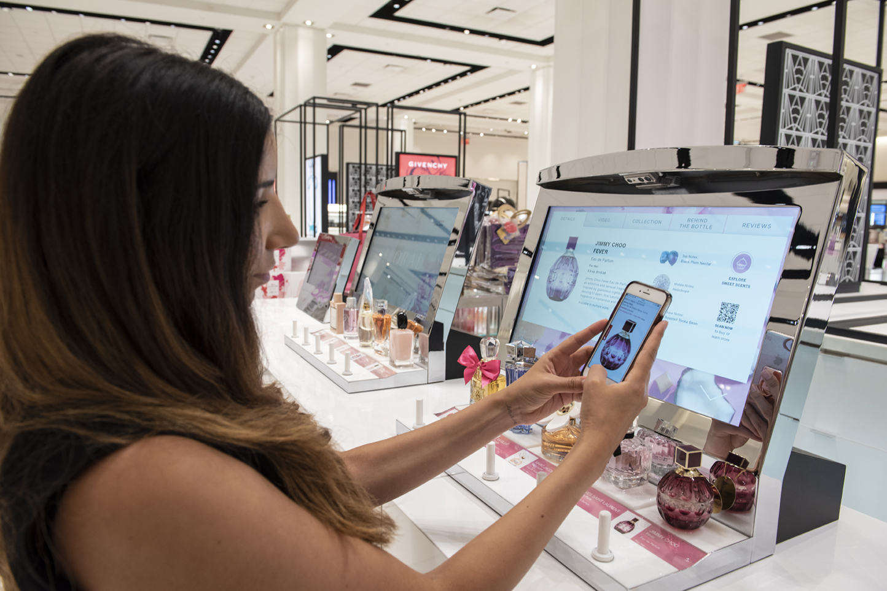
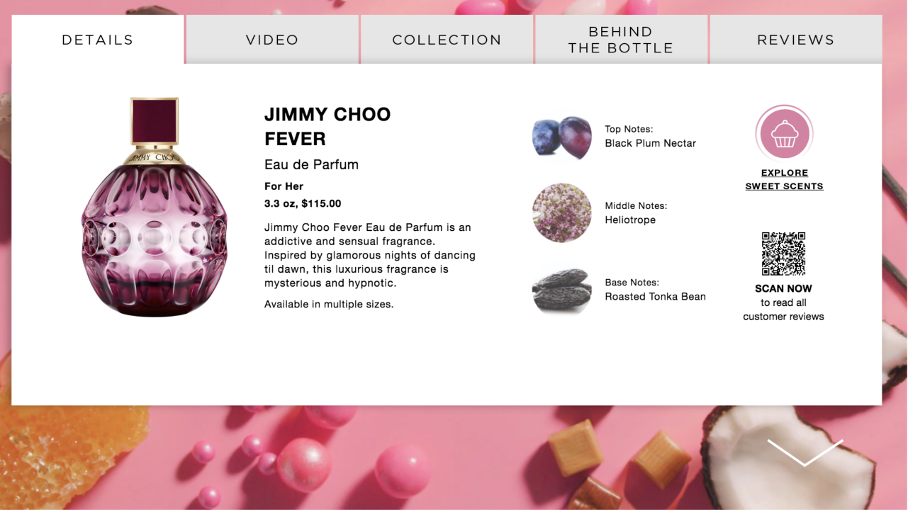
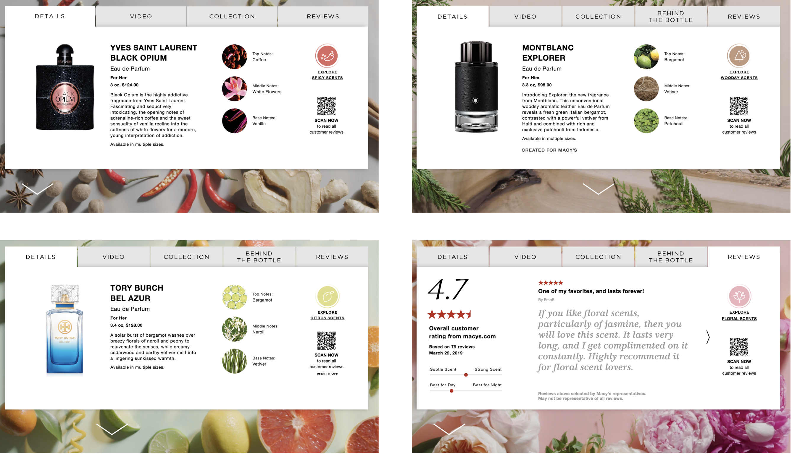
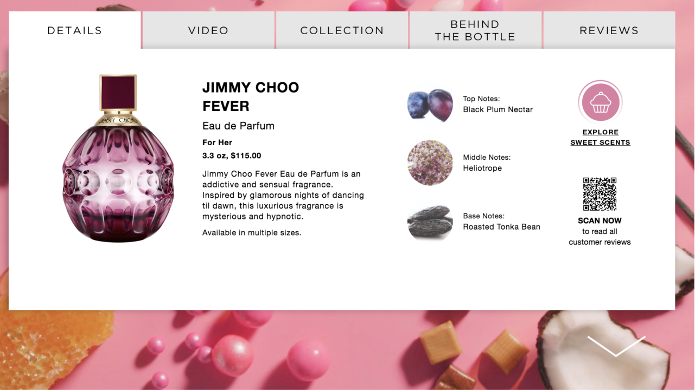
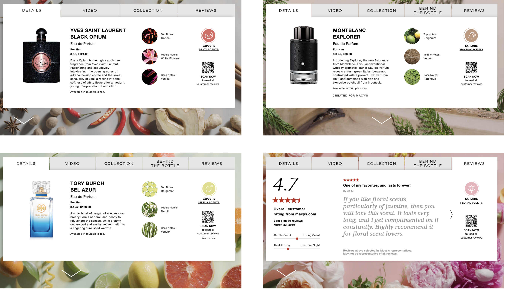
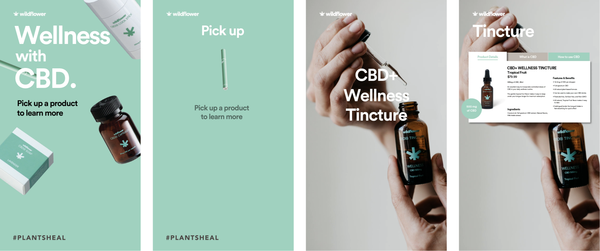
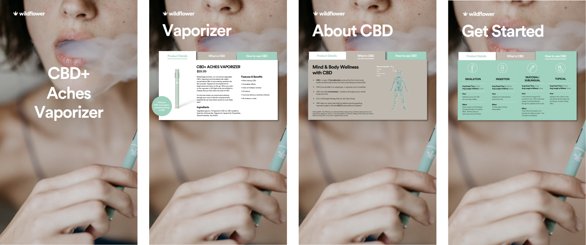

designed interactive retail display solutions for perch interactive
Perch is the leader in interactive retail, creating in-store displays where a customer's touch of a physical product activates digital content. In her role as Director of User Experience, Sandra works to bring experiences to life for a wide range of clients, including Macy's, STORY, and Wildflower.
____ Fragrance Bar at Macy's
Macy's partnered with Perch to create the next generation fragrance experience. Featuring 30 fragrances categorized into 6 scent family, the experience provides a new way for shoppers to explore and discover scents in-store.
Sandra worked with Macy's to create an engaging, educational experience that lives within the Macy's brand, while still giving each fragrance room to shine. The experience comes to life through rich media presented in a simple, easy-to-navigate interface that carefully considers the relationship between physical and digital.
____ role: design lead, UX/UI
   



____ CBD education at Wildflower
Wildflower worked with Perch to provide point-of-sale product education, allowing customers to explore the details of their product portfolio and find the right solution for a desired outcome.
Sandra worked closely with Wildlower to understand the needs of the CBD customer, creating a display that presents relevant information in engaging, digestible bits and is true to the Wildflower brand.
____ role: design lead, UX/UI, animation
 